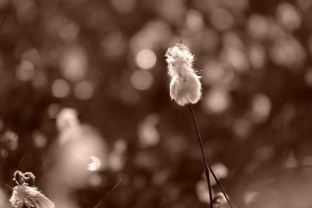

I t’s one of my midsummer rituals, if the forecast is right, to climb on to the moorland tops and await sunset. I build in several secondary goals: check if there are lapwings still on eggs in the sheep pasture below the summit (just two); see if there are curlew pairs breeding in the heather (only three).
These exercises add to a personal dataset that is 50 years old. While I can confirm that, in all that time, snipes, curlews, lapwings and golden plovers have bred annually, both redshanks and dunlins have long gone and the other quartet is much diminished. As a result, Combs Moss is steeped in melancholy for me.
It’s not just the loss of breeding waders, but the sense of remarkable emptiness on these driven-grouse places. You stand there in the falling light, gazing across thousands of acres, Manchester twinkling as a child’s toytown on the far horizon, and there can be no sign of any wild vertebrate life for minutes on end. Except your own troubled heartbeat.
Common cotton-grass on Combs Moss.Photograph: Mark Cocker
I love this place tenderly. I also lament its deeply arrested condition and, as I settle in for the sunset hour, I ponder how we can terminate legally these bird-killing rituals and create something richer.
But my business isn’t politics. There are few places more beautiful in our area than Derbyshire’s cotton fields at dusk. In this moment, it’s the common cotton-grass whose white-flossed heads, unfolding across the rolling moor, actually invoke some landscape in deepest Alabama.
In Shetland and Orkney, in fact, people once had the patience and skill to pick, spin and knit this sedge floss into garments. There is a pair of christening socks in the Orkney Museum that is made from what they called “ Lucky Minnie’s Oo ”, oo meaning wool in Shetlandic.
Tonight, it flows as salt-white foam settled on a full tide, or even like the crusted snow blanketing this same place during most winters. I love it most where the dusk-tinted hanks of the bog-cotton mingle with the minute, hard, rose-tinged seedheads of the bent grasses. Together they create this enormous glittering sheet whose matrix colour, at last light, is the soft sepia of deep nostalgia.
Under the Changing Skies: The Best of the Guardian’s Country Diary, 2018-2024 is published by Guardian Faber; order at guardianbookshop.com and get a 15% discount